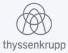
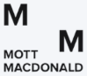
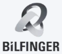

[Course thumbnail]
Piping design and analysis
Designing according to the EN 13480 code
- Piping · Starting and Senior Piping Engineers
- EN 13480 · Design Codes
- Self-paced · 6 hours
Identify the codes, standards, methods, software, systems, and specialist topics the project will require.
Select relevant courses or learning paths based on each engineer's responsibilities and existing experience.
Engineers connect what they learn directly to calculations, design decisions, reviews, and technical discussions as the work begins.
Identify the codes, standards, methods, software, systems, and specialist topics the project will require.
Select relevant courses or learning paths based on each engineer's responsibilities and existing experience.
Engineers connect what they learn directly to calculations, design decisions, reviews, and technical discussions as the work begins.



Piping design and analysis
Piping design and analysis
Pressure equipment and compliance
Pressure equipment and compliance
Dynamic and transient piping problems
Dynamic and transient piping problems
Understand the principles, assumptions, limitations, and failure mechanisms behind codes, calculations, and software results.
Learn from engineers who contribute to ASME codes and EN standards and bring decades of industry experience to the subjects they teach.
Engineers can learn at their own pace alongside active projects, without fixed classroom schedules or days away from their engineering work.
Our courses cover the codes, standards, calculations, methods, and software used in piping and mechanical engineering projects.
Next step
Tell us about the engineers involved, the work ahead, and the technical capability you need to build. A Training Advisor will recommend suitable courses, programs, or learning paths.